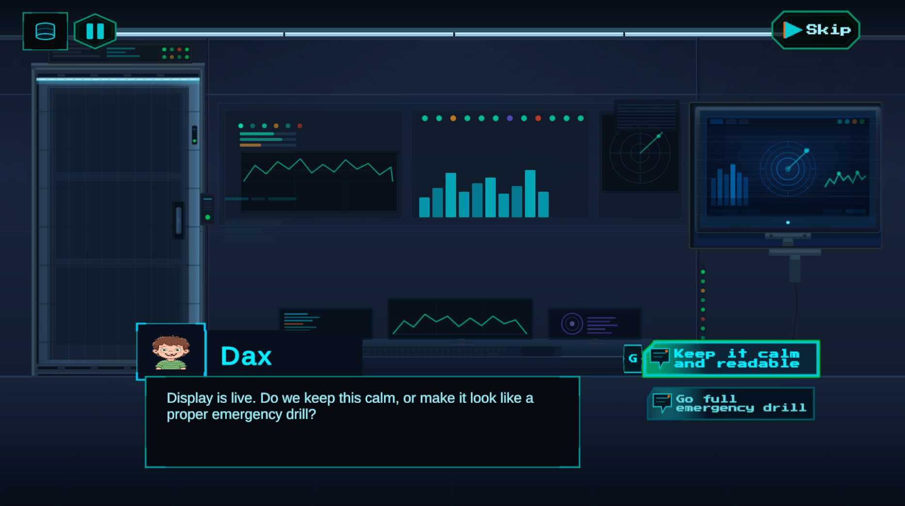

Unity Documentation Portal · v2.0.0 · AI Extension v1.0.0
Graph-based dialogue docs built for developers, contributors, and reviewers.
This site publishes the repository documentation for Dialogue Graph System in a cleaner, browsable HTML format.
It covers the runtime, editor tooling, settings model, JSON workflow, transcript support, and the optional AI extension.
What the project does
Dialog Graph System is a Unity toolkit for authoring branching conversations in a graph editor and playing them
back through a runtime UI. It includes a JSON round-trip workflow, action nodes, a history panel, transcript
rebuilding, and an optional AI extension for command-based authoring assistance.
1
Demo scene, 3 playable graphs
5
Core node types
13
AI command types
Graph Editor Overview

Who this documentation is for
Developers
Learn how to wire DialogManager, play conversations by dialogID, and integrate actions, history, and transcripts.
Contributors
Understand the editor/runtime split, asset model, and the safest extension points before changing the graph workflow.
Reviewers and clients
Inspect the architecture, supported workflows, and major systems without digging through every Unity script first.
Key features
Graph-based authoring
Author Start, Dialog, Choice, Action, and End nodes through editor-only GraphView tooling.
Runtime playback
Use TextMeshPro-backed UI for speaker names, portraits, typewriter effects, skip, autoplay, and choice handling.
JSON workflows
Export and import graph JSON for backup, review, migration, and controlled external tooling.
Action nodes
Run UnityEvent bindings or coroutine-based gameplay handlers through DialogActionRunner and IActionHandler.
History and transcripts
Keep a player-facing backlog and rebuild the exact played branch with deterministic transcript generation.
Visual themes
Swap the entire UI look at runtime with DialogThemeSO. Five ready-made themes included: Fantasy RPG, Gothic Horror, Minimalist, Sci-Fi HUD, and Visual Novel.
AI extension
Issue free-text commands in the graph editor's AI sidebar to rewrite lines, insert nodes, and extend branches — with a preview step before any change is applied.
Start here
Getting Started
Quick repo orientation, demo scenes, and the smallest runtime setup to get the system running.
Installation
Unity requirements, package assumptions, scene setup checklist, and AI extension setup basics.
Quick Tutorial
Create a graph, wire a dialogID, trigger playback, and inspect the branch transcript.
Architecture
Review the editor/runtime split, data flow, extension points, and current coupling boundaries.
Examples and common workflows
Demo entry points in this repository
Open Assets/DialogGraphSystem/DemoScenes/DialogueDemo.unity and press Play. The demo menu lets you launch any of the three sample graphs.
| Graph asset | Purpose |
|---|
Assets/DialogGraphSystem/Graphs/Demo_CafeChoices.asset | Branching conversation with choices. |
Assets/DialogGraphSystem/Graphs/Demo_ControlRoomActions.asset | Action nodes and waitable coroutine behavior. |
Assets/DialogGraphSystem/Graphs/Demo_ProductTour.asset | Linear guided tour demonstrating typewriter and portrait effects. |
Screenshot-ready sections
Graph editor overview
Best for the Architecture and Graph Editor pages.
Runtime UI

Best for Getting Started and Runtime UI Components.
Settings window

Best for Installation and Settings System.
AI extension sidebar

Best for the AI Extension module and AI-assisted authoring guide.